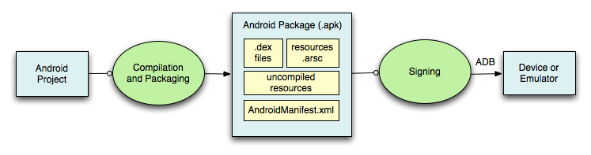

Apps móviles con Android
Seminario 2 - Analista Universitario en sistemas
2da Semana
Created by Patricio Keilty / @patokeilty

Fundamento de Aplicaciones
Componentes fundamentales de una applicación
- Activity (lógica de interacción con la UI, subclase de Activity.class)
- Services (ejecución de procesos/tareas en background - Service.class)
- BroadcastReceivers (subscribe a notificaciones de eventos del SO - BroadcastReceiver.class)
- ContentProvider ( junto a ContentResolver, se usa para compartir datos entre procesos: query(), insert(), update(), delete())
Componentes de una aplicación
Activity class
- clase central para interactuar con el usuario, presentar la interface (UI)
- una activity deber estar enfocada en la realización de una acción simple del usuario (ej. marcado de un número telefónico, ingresar datos de un contacto)
Service class
- pueden ejecutar tareas que corren por largos períodos de tiempo,
- segundo, proveen una manera de que diferentes procesos invoquen operaciones o compartan datos.
típico ejemplo: MediaPlayback Service, permite seguir escuchando música mientras se invocan otras apps, o activities.
Broadcast Receiver
escucha y responde ante eventos del sistema
- eventos <-> Android Intents
- Publishers entonces crean un Intent y lo transmiten (broadcast)
- esos Intents son encaminados a los respectivos receptores, que han subscripto para recibir ese tipo de eventos.
ejemplo típico: SMS app, tiene una parte que es un Broadcast Receiver, y al recibir un evento de llegada de SMS, se dispara un servicio para descargar y almacenar el sms.
Content Provider
Permite a una app almacenar y compartir datos
- usan una interface estilo base de datos
- pero se encargan de mucho mas, como manejar los detalles de la comunicación entre procesos
el navegador es un ejemplo de Content Provider, porque almacena los sitios favoritos (bookmarks) de usuario y permite acceder y compartir estos datos desde otras apps.
Otros componentes de una App
- Views (vista) - jeraquía de clases que representa un elemento de la UIView.class)
- Layouts (clase de Views que contienen otras Views y se ocupan del formato y apariencia de las mismas)LinearLayout.class
- Fragments - representa una porción de la UI en una Activity. Guía de fragmentos
- Intents - eventos del sistemaIntent.class
- Recursos - elementos externos a la app: imágenes, textos, constantes; resuelven en runtime. guía de recursos
- Manifest.xml - definición de la app Manifest.xml
App ejemplo: NumberDialer
esta aplicación involucra 2 Activities
Construyendo una App

Construyendo una App
Típicamente como desarrollador debemos hacernos cargos de lo siguiente
- definir recursos
- implementar clases de la app
- empaquetar app
- instalar y correr/debuggear app
Definir Recursos
- son entidades sin código
- muchos tipos diferentes: layouts, strings, imágenes, menúes, animaciones
- permiten customizar app para distintos dispositivos, sin necesidad de recompilar todo
Strings
- tipos: strings, string arrays, plurals
- ubicados en res/values/*.xml
- especificado en XML: <string name="">Hola mundo!</string>
- ej: localización el español
- accedido x recursos: @string/string_name
- y desde java: R.string.string_name
veamos un ejemplo en la app NumberDialer
Layouts
- UI Layouts especifica en XML como se visualizan partes de una app
- algunas herramientas permiten diseñar el layout visualmente
- XML layouts se guardan bajo res/layout/*.xml
- accedido desde java: R.layout.layout_name
- accedido desde otros recursos: @layout/layout_name
Layouts múltiples
Se puede especificar un layout diferente basado en: orientación, tamaño screen, etc
R
R.java
- En tiempo de compilación es generada la clase R.java
- Java usa las referencias en R.java para acceder a los recursos
Implementar clases de la app
- típicamente involucra definir algún componente básico: típicamente una Activity
- código de inicialización del Activity: onCreate(..)
-
- restaurar estado de la app
- setear el contenido de la vista (content view), le dice al sistema cuál es la interface de usuario de la activity
- inicialzar elementos específicos de la UI
- vincular código para el manejor de interacción con elementos del UI
Packaging de la app
Generar el paquete con todas las clases, recursos de la app. Definido en fichero AndroidManifest.xml
- nombre de la aplicación
- lista de componentes que componen la app
- permisos para correr esta aplicación:
<uses-permission> - características de hardware que emplea según las versiones del API que usa, y cuál es la mínima requerida:
<uses-sdk android:minSdkVersion="8" android:targetSdkVersion="17" />
Instalación y ejecución de la app
Veamos nuestra aplicación andando...
Activity
Componente visual del app
- provee una UI para interacción con el usuario
- una app se puede componer de un encadenamiento de 1+ Activity
- en Android, una tarea (Task) comprende una serie de Activities relacionadas, como resultado de las acciones del usuario
- la navegación de una Activity a otra en Android está asociada al concepto de: Task (tarea) y Task Backstack (pila de activities)
Task Backstack

- lanza una app ventana principal: Activity1
- luego inicia Activity2
- luego inicia Activity3
- se presiona botón back: Activity3 destruida
- Activity2 queda al frente
mas detalles en : http://developer.android.com/guide/topics/fundamentals/tasks-and-back-stack.html
Estados de un Activity
- Resumed/Running - visible, ususario interactuando
- Paused/Visible - visible, usuario no interactúa, puede ser destruida
- Stopped - no visible, puede ser destruida
Callbacks de un Activity
- onCreate() - cuando va a ser creada
- onStart() - cuando está por ser visible
- onDestroy() - cuando va a ser destruida
Ciclo de vida de un Activity